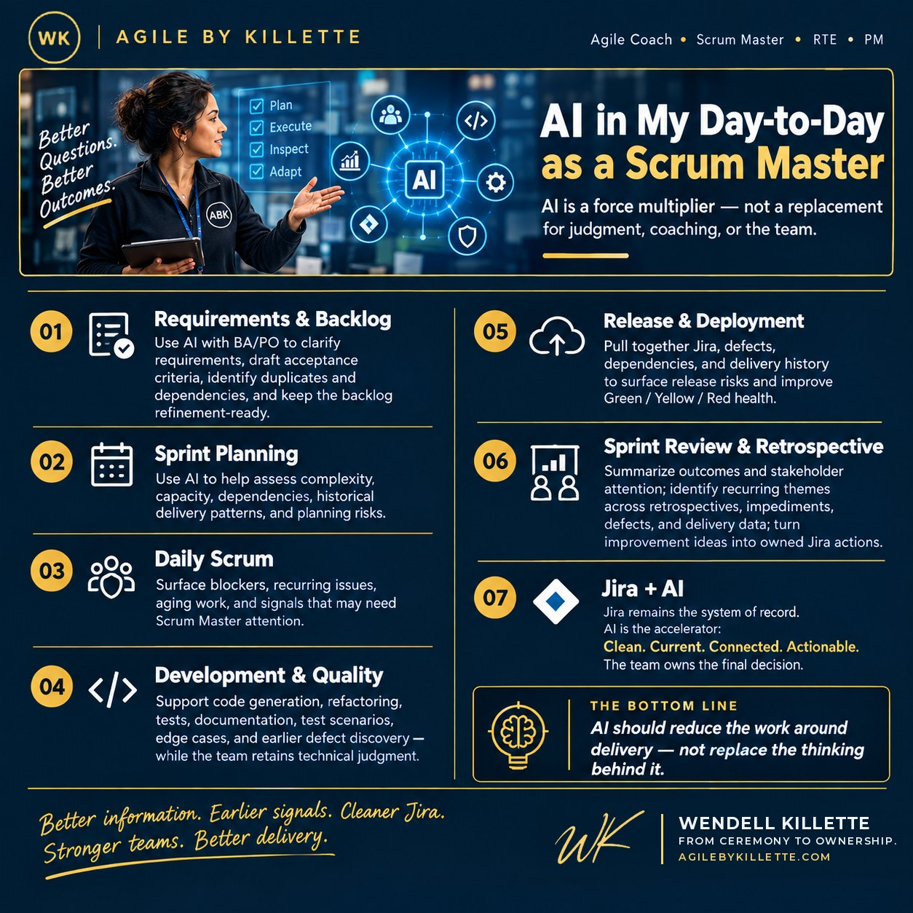

I use AI with my BA and Product Owner to turn conversations, notes, and requirements into clearer Jira stories. AI helps us:
My job is still to challenge the output, coach the team, and make sure the work is understood before we commit to it.
As a motivator and team lead, I encourage my developers to use AI where it makes sense — code generation, refactoring, unit tests, documentation, and troubleshooting.
I also use AI to help identify dependencies, blockers, and stories that may become a risk. That gives me the opportunity to act before a problem becomes a sprint problem.
Before becoming a Scrum Master, I was a QA engineer, so I often look at the work through a tester's eyes. We used AI to help our QA team turn acceptance criteria into test scenarios, edge cases, and negative testing ideas.
AI can also help identify patterns in defects and highlight areas that deserve additional attention.
The goal isn't simply to test faster. I often tell the team: we want to fail fast, so we find issues early.
As we approach release, we use AI to help pull together information from Jira, defects, dependencies, and delivery history.
It can help identify release risks, generate release summaries, and highlight items that need attention before we move forward. That gives the team a better view of Green / Yellow / Red release health. It's always great to have a clear expectation.
I use AI to help the team understand complexity, dependencies, historical velocity, and capacity.
I use AI to surface blockers, recurring issues, and items that may need my attention.
This is where AI can have a huge impact, especially in saving time — and being efficient with my team's time is one of the things I care about most.
We use it to help clarify stories, draft acceptance criteria, identify dependencies, and expose gaps before sprint commitment.
Why did I bold sprint commitment? Because once we've committed to the work, that is our promise to each other — and to the train — about what we are delivering.
I use AI to help summarize what was delivered, what changed, and what stakeholders should pay attention to.
I use AI to identify recurring themes across retrospectives, defects, impediments, and delivery data. The goal is to turn:
into:
For me, Jira is the system of record and AI is the accelerator. I use AI to help keep Jira:
It can help summarize issues, create acceptance criteria, identify dependencies, flag aging work, and surface potential sprint risks.
But I don't let AI make the final call. The team owns the decision.
See The AI + Jira Playbook for the JQL I use and how AI turns each result into insight.
AI doesn't replace what I do as a Scrum Master. As I said earlier, it's my assistant and validator — but I still verify, because I've seen many, many mistakes from AI, both on the job and in personal projects.
What it does is let me spend less time managing information and more time coaching people, improving flow, removing impediments, and helping the team make better decisions.
Better information. Earlier signals. Cleaner Jira. Stronger teams. Better delivery.